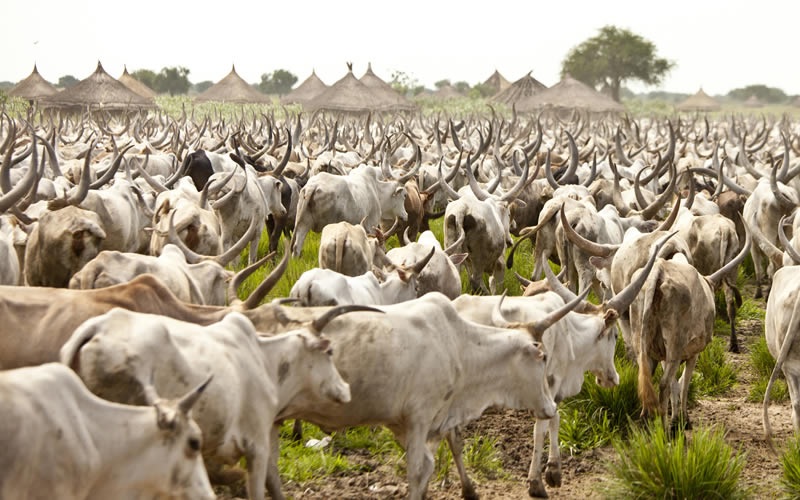

Overgrazing
Overgrazing is caused by excessive livestock raising. Grazing animals graze on grasses and bushes in huge regions of pasture or natural grasslands. Grazers expose soil by eliminating plant cover from a specific region. With their hooves, they also churn up the soil. When too many animals graze in the same area, the hooves of the animals pull the plants out by their roots.
This loosens the soil, making it prone to erosion. Overgrazing can remove the ground cover, allowing wind and rain to erode and compress the terrain. Plants are crushed and compacted by cattle because they do not have the necessary recovery period.
Converting natural ecosystems to pasture land may not immediately harm the land as much as crop cultivation does, but this change in usage can result in significant rates of erosion and loss of topsoil and nutrients.
As for the remaining soil, it may lose its infiltration capability, reducing the ability of plants to grow and water to permeate, harming soil bacteria, and causing severe erosion of the land. This also implies that more water is being wasted on the environment, making it more difficult for new plants to thrive.